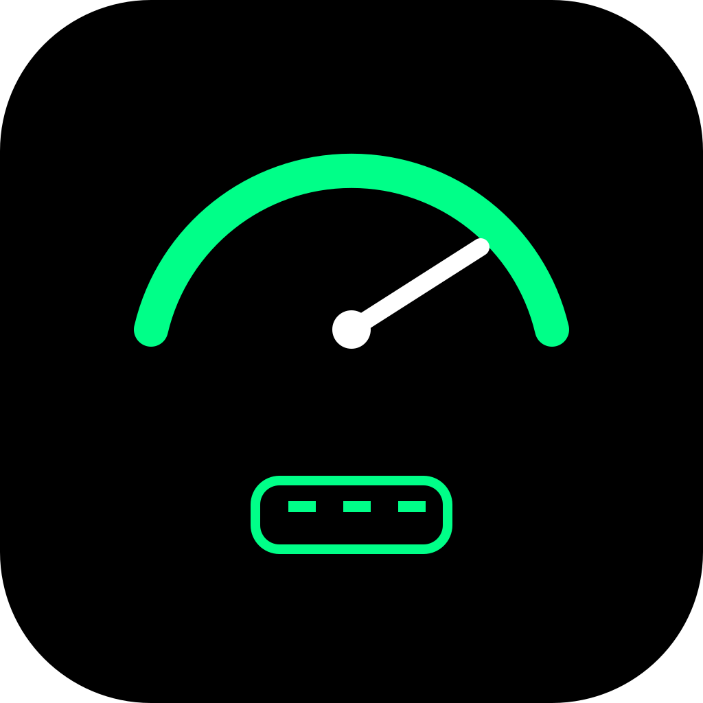

Motroxia
Real-time OBD2 car monitor
Turn your phone into a live car dashboard. Plug an ELM327-compatible OBD2 adapter into your car and watch engine data on gauges you arrange yourself.
スマートフォンを車のリアルタイムメーターに。ELM327 互換の OBD2 アダプタを車に挿し、エンジンのデータを自分で配置したメーターで表示します。
Features / 主な機能
- Live gauges for RPM, speed, coolant temperature, battery voltage, boost pressure and more
- Multiple meter pages. Add widgets and set each one's data, style, colors and range
- ECU info: which standard OBD-II PIDs your car supports, and its communication speed
- Custom PIDs: create your own values with formulas based on raw PID data
- Metric, imperial or custom units
- Demo Mode to try every feature without an adapter
- English and Japanese
- 回転数・車速・水温・バッテリー電圧・ブースト圧などをリアルタイム表示
- 複数のメーターページ。ウィジェットごとにデータ・スタイル・色・レンジを設定
- ECU 情報：車両が対応している標準 OBD-II PID と通信速度を確認
- カスタム PID：PID の生データから計算式で独自の値を作成
- メートル法・ヤード・ポンド法・カスタムの単位設定
- アダプタなしで全機能を試せるデモモード
- 日本語・英語に対応
Requirements / 動作環境
- iPhone
- iOS 15 or later
- Android
- Android 10 or later
- Adapter
- ELM327-compatible OBD2 adapter with Bluetooth LE or Wi-Fi
- Vehicle
- OBD-II compliant vehicle. Available data depends on the vehicle.
- iPhone
- iOS 15 以降
- Android
- Android 10 以降
- アダプタ
- Bluetooth LE または Wi-Fi で接続する ELM327 互換 OBD2 アダプタ
- 車両
- OBD-II 対応車。取得できるデータは車種によって異なります。
Classic Bluetooth (SPP) adapters are not supported. Adapters that pair in your phone's Bluetooth settings with a PIN such as 1234 are usually classic Bluetooth. Wi-Fi adapters must use the common address 192.168.0.10, port 35000.
クラシック Bluetooth（SPP）のアダプタには対応していません。スマートフォンの Bluetooth 設定で PIN（1234 など）を入れてペアリングするタイプは、たいていクラシック Bluetooth です。Wi-Fi アダプタは、一般的な 192.168.0.10（ポート 35000）で待ち受けるものに対応しています。
Try before you buy / ご購入の前に
The free plan includes the basic meter display, up to 2 meter pages and up to 2 widgets per page, with ads. Please check that your adapter and vehicle work on the free plan before purchasing.
No adapter yet? Demo Mode shows every feature with simulated data. Turn it on in Settings → Demo & Support → Demo Mode, or tap Start Demo Mode on the ELM screen. It turns off automatically when you connect a real adapter.
無料プランでは、基本のメーター表示、メーターページ 2 枚まで、1 ページあたりウィジェット 2 個までをご利用いただけます（広告表示あり）。ご購入の前に、無料プランでお使いのアダプタと車両の動作をご確認ください。
アダプタがまだない場合は、デモモードで全機能を模擬データでお試しいただけます。設定 → デモ・サポート → デモモード、または ELM 画面の「デモモードを開始」から有効にできます。実際のアダプタに接続すると自動で終了します。
Premium / プレミアム
- Hide ads completely
- Permanent Custom PID unlock
- Unlimited widget pages
- Unlimited widgets per page
- Import / Export
- Support development
Choose Monthly, Yearly or Lifetime. All three include the same benefits. Subscriptions renew automatically unless cancelled at least 24 hours before the end of the current period, and can be managed in your App Store or Google Play account settings. Lifetime is a one-time purchase and does not renew.
- 広告を完全非表示
- Custom PID 永続アンロック
- ウィジェットページ無制限
- ページあたりウィジェット無制限
- Import / Export 機能
- 開発をサポート
月額・年額・買い切りから選べます。特典はどれも同じです。サブスクリプションは、期間終了の 24 時間以上前に解約しない限り自動更新され、App Store または Google Play のアカウント設定から管理できます。買い切りは一度だけの購入で、自動更新はありません。
Support / サポート
The adapter doesn't appear when I scan / スキャンしてもアダプタが表示されない
- Check that it is a Bluetooth LE or Wi-Fi adapter (see Requirements).
- Turn the ignition on so the adapter has power.
- Allow Bluetooth access. iPhone: Settings → Motroxia → Bluetooth. Android 12 and later: allow Nearby devices. Android 10 and 11: allow Location, which Android requires for Bluetooth scanning.
- For a Wi-Fi adapter, first join its Wi-Fi network in your phone's settings. On iPhone, also allow Local Network access.
- Bluetooth LE または Wi-Fi のアダプタかご確認ください（動作環境を参照）。
- アダプタに電源が入るよう、イグニッションをオンにしてください。
- Bluetooth を許可してください。iPhone：設定 → Motroxia → Bluetooth。Android 12 以降：「付近のデバイス」を許可。Android 10・11：Bluetooth のスキャンに Android が要求するため「位置情報」を許可。
- Wi-Fi アダプタの場合は、先にスマートフォンの設定でアダプタの Wi-Fi に接続してください。iPhone では「ローカルネットワーク」も許可してください。
Connected, but some gauges show no value / 接続できたが、一部のメーターに値が出ない
Available data depends on the vehicle. Open the ECU screen to see which PIDs your car supports, and use those for your gauges.
取得できるデータは車種によって異なります。ECU 画面で車両が対応している PID を確認し、その中からメーターに割り当ててください。
Restore a purchase on a new phone / 機種変更後に購入を復元したい
Purchases are usually restored when the app starts. If not, tap Premium on the home screen, then Restore Purchase. If a checklist appears first, tap “No adapter yet? View plans”. Use the same Apple ID or Google account you purchased with.
通常はアプリの起動時に復元されます。復元されない場合は、ホーム画面の「プレミアム」から「購入を復元」をタップしてください。先に確認画面が表示された場合は「アダプタなしでプランを見る」をタップします。購入時と同じ Apple ID / Google アカウントをお使いください。
Cancel a subscription / サブスクリプションを解約したい
Tap Manage Subscriptions on the Premium screen, or cancel in the store. iPhone: Settings → your name → Subscriptions. Android: Google Play → profile icon → Payments & subscriptions → Subscriptions. Deleting the app does not cancel a subscription.
プレミアム画面の「サブスクを管理」、またはストアから解約できます。iPhone：設定 → ユーザ名 → サブスクリプション。Android：Google Play → プロフィールアイコン → お支払いと定期購入 → 定期購入。アプリを削除しても解約にはなりません。
I bought Lifetime while subscribed / サブスク中に買い切りを購入した
Lifetime already includes every benefit. Cancel the subscription in your store settings to stop further charges.
買い切りですべての特典が有効になります。追加の請求を止めるため、ストアの設定でサブスクリプションを解約してください。
Refunds / 返金について
Refunds are handled by Apple or Google under their own policies, and we cannot issue them directly. App Store: reportaproblem.apple.com. Google Play: Google Play Help.
返金は Apple または Google が各社のポリシーに基づいて対応するため、開発者から直接返金することはできません。App Store：reportaproblem.apple.com。Google Play：Google Play ヘルプ。
Change ad consent / 広告の同意設定を変更したい
Open Settings → Privacy Options. This item appears only in regions where consent is required.
設定 → プライバシー設定 から変更できます。同意が必要な地域でのみ表示されます。
Contact / お問い合わせ
Email: hdbenchnet@gmail.com
To help us investigate, please include the app version, your phone model and OS version, the adapter name and connection type (Bluetooth LE or Wi-Fi), and your car's make, model and year. English or Japanese is fine.
調査のため、アプリのバージョン、スマートフォンの機種と OS バージョン、アダプタの製品名と接続方式（Bluetooth LE / Wi-Fi）、車種と年式をお知らせください。日本語・英語どちらでも構いません。